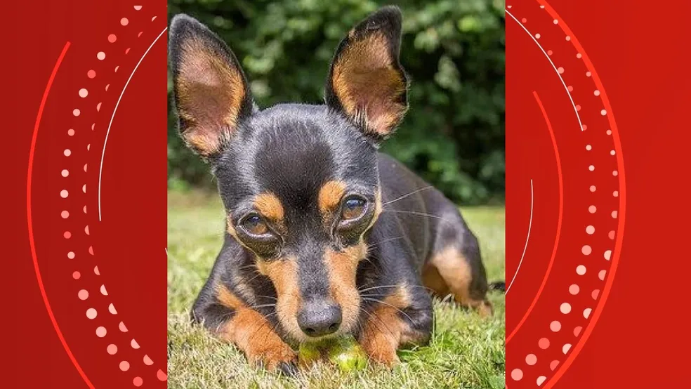

Conheça nossos Pets
Filtros Ativos:
Nenhum filtro aplicado.

Julius
°Raça: Mudi
°Idade: Idoso
°Tem doença? Cinomose
°Adotado? Não

Rex
°Raça: Dogue Alemão
°Idade: Idoso
°Tem doença? Não
°Adotado? Não

Mel
°Raça: Golden Retriever
°Idade: Filhote
°Tem doença? Não
°Adotado? Não

Yuki
°Raça: Shiba Inu
°Idade: Adulto
°Tem doença? Não
°Adotado? Não

Luna
°Raça: Beagle
°Idade: Filhote
°Tem doença? Não
°Adotado? Não

Brutus
°Raça: Bulldog Inglês
°Idade: Idoso
°Tem doença? Artrite
°Adotado? Sim

Nina
°Raça: Poodle
°Idade: Adulto
°Tem doença? Não
°Adotado? Não

Thor
°Raça: Rottweiler
°Idade: Adulto
°Tem doença? Não
°Adotado? Não

Amora
°Raça: Dachshund
°Idade: Idoso
°Tem doença? Problemas de visão
°Adotado? Sim

Buddy
°Raça: Labrador
°Idade: Filhote
°Tem doença? Não
°Adotado? Não
Pets Favoritados
Principais notícias:
Laika, a vira-lata 'pioneira' enviada ao espaço em 1957 em missão 'sem volta'
Há exatos 65 anos, um ser vivo deixou, pela primeira vez, o planeta Terra rumo ao espaço: a cachorrinha Laika, lançada no satélite russo Sputnik 2, em 3 de novembro de 1957.
Leia mais na BBCPinscher morre após salvar 4 crianças de serem atacadas por rottweiler no ES
Um cachorro pinscher foi morto ao tentar salvar quatro crianças entre três e sete anos de um ataque de outro cão da raça rottweiler em um sítio em Linhares, no Norte do Espírito Santo, na tarde desta quinta-feira (25).
Leia mais no G1Pequinês chamado Wasabi vence "concurso de beleza" para cães em NY
Ele é pequinês e seu nome é Wasabi: esta bola peluda ganhou o prêmio "Melhor da Exposição" no Westminster Dog Show na noite de domingo, um famoso concurso de beleza canina em Nova York, que este ano mudou-se para a bucólica Tarrytown devido à pandemia
Leia mais na UOL